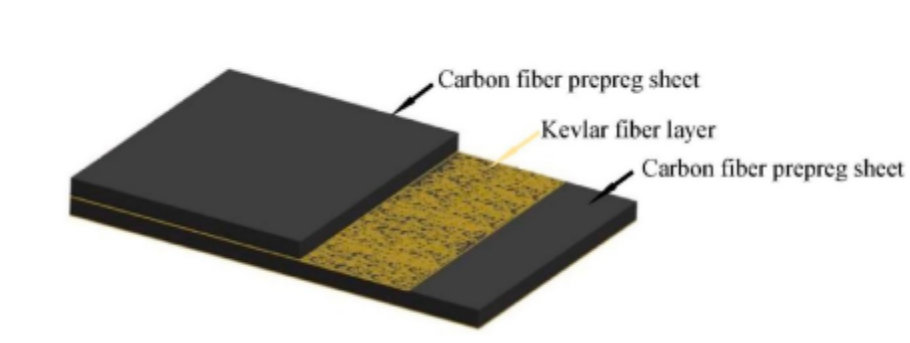

Improving the Durability of Composite Skis
A technical memo proposing stronger fibers, tougher epoxies and a standardized test plan to stop composite skis from delaminating and tearing out bindings. It concludes the gains in safety and lifespan justify further testing despite added cost and manufacturing complexity.